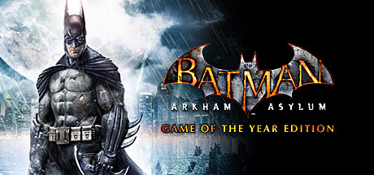
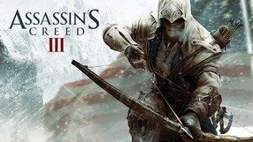
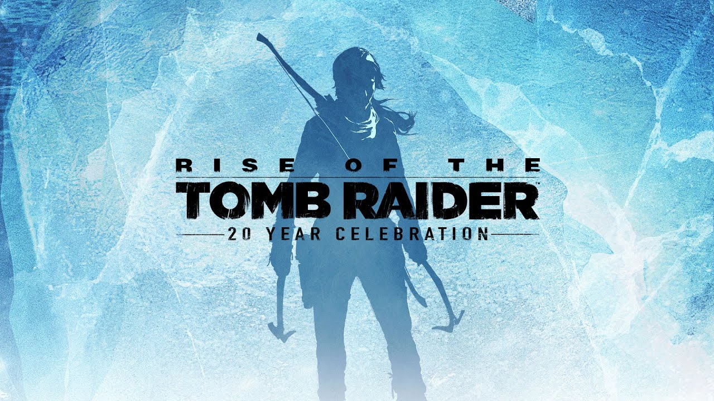

GryPC.PL
GryPC.PL
Action games
Komputerowa gra akcji to gatunek gier komputerowych, w których cała rozgrywka polega w głównej mierze na szybkości akcji, której gracz jest uczestnikiem oraz na refleksie gracza.
Pare przykładów:

"Batman: Arkham Asylum" to komputerowa gra akcji z perspektywą trzeciej osoby wyprodukowana przez Rocksteady Studios oraz wydana przez Eidos Interactive. Dystrybucją w Polsce zajęła się firma Cenega. Światowa premiera odbyła się
26 sierpnia 2009 roku. Gra w Polsce ukazała się 28 sierpnia 2009 roku na PlayStation 3, Xbox 360, oraz Microsoft Windows. Planowana jest też wersja na Linuksa. 15 listopada 2011 roku wydano kontynuację gry zatytułowaną "Batman: Arkham City".
Redakcja magazynu PC Gamer UK w 2015 roku przyznała grze 50. miejsce na liście najlepszych gier na PC.
Akcję ulokowano w zakładzie dla obłąkanych przestępców, czyli tytułowym Azylu Arkham. Sama gra łączy ze sobą wiele gatunków, są w niej elementy zręcznościowe, ale również elementy skradanki. Głównym przeciwnikiem Batmana w grze jest Joker. Jokerowi udaje się uwolnić z więzienia dla psychopatów i zbiec w mroczne korytarze Arkham. Wyrusza za nim Batman, jednak nie będzie to takie łatwe, bo po drodze musi stawić czoła pozostałym pacjentom zakładu, począwszy od zwykłych bandytów, kończąc na takich osobowościach jak Zsasz, Strach na Wróble, Bane czy Trujący Bluszcz. Człowiek nietoperz ma możliwość korzystania z różnorakich bat-gadżetów, które są bardzo przydatne w przemieszczaniu się po Arkham oraz szybkim rozliczeniu się ze złoczyńcami. Mroczny rycerz może skorzystać również ze specjalnej jaskini w podziemiach o nazwie Bat Cave, w której może dokonać wymiany niezbędnych gadżetów i przygotować się do dalszej penetracji mrocznych zakamarków zakładu pełnego niebezpieczeństw.
26 sierpnia 2009 roku. Gra w Polsce ukazała się 28 sierpnia 2009 roku na PlayStation 3, Xbox 360, oraz Microsoft Windows. Planowana jest też wersja na Linuksa. 15 listopada 2011 roku wydano kontynuację gry zatytułowaną "Batman: Arkham City".
Redakcja magazynu PC Gamer UK w 2015 roku przyznała grze 50. miejsce na liście najlepszych gier na PC.
Akcję ulokowano w zakładzie dla obłąkanych przestępców, czyli tytułowym Azylu Arkham. Sama gra łączy ze sobą wiele gatunków, są w niej elementy zręcznościowe, ale również elementy skradanki. Głównym przeciwnikiem Batmana w grze jest Joker. Jokerowi udaje się uwolnić z więzienia dla psychopatów i zbiec w mroczne korytarze Arkham. Wyrusza za nim Batman, jednak nie będzie to takie łatwe, bo po drodze musi stawić czoła pozostałym pacjentom zakładu, począwszy od zwykłych bandytów, kończąc na takich osobowościach jak Zsasz, Strach na Wróble, Bane czy Trujący Bluszcz. Człowiek nietoperz ma możliwość korzystania z różnorakich bat-gadżetów, które są bardzo przydatne w przemieszczaniu się po Arkham oraz szybkim rozliczeniu się ze złoczyńcami. Mroczny rycerz może skorzystać również ze specjalnej jaskini w podziemiach o nazwie Bat Cave, w której może dokonać wymiany niezbędnych gadżetów i przygotować się do dalszej penetracji mrocznych zakamarków zakładu pełnego niebezpieczeństw.

"Assassin’s Creed III" to przygodowa gra akcji stworzona przez Ubisoft Montreal, wydana przez Ubisoft w 2012 roku na platformy Microsoft Windows, Xbox 360, PlayStation 3 i Wii U. Stanowi piątą dużą odsłonę serii Assassin’s Creed i kontynuację wydanego rok wcześniej "Assassin’s Creed: Revelations". Premiera gry na Xboksa 360 i PlayStation miała miejsce 30 października 2012 roku, z kolei na komputery osobiste i konsolę Wii U w listopadzie 2012.
Fabuła osadzona jest w świecie rzeczywistym i przedstawia trwający od stuleci konflikt pomiędzy asasynami walczącymi o pokój i wolną wolę, a templariuszami pragnącymi pełnej kontroli. Opowieść spajająca fabułę osadzona jest w XXI wieku i koncentruje się na losach Desmonda Milesa, który w maszynie nazywanej animusem odtwarza wspomnienia swoich przodków próbując znaleźć sposób na zapobieżenie mającej nastąpić w 2012 roku apokalipsie. Historia osadzona jest w XVIII wieku, w latach 1753-1783 – przed, w trakcie i po wojnie o niepodległość Stanów Zjednoczonych – a jej bohaterem jest będący pół Anglikiem, pół Mohawkiem przodek Desmonda Ratonhnhaké:ton (wym. radunhagedun; z języka Mohawków imię można przetłumaczyć jako „życie, które zostało zarysowane”, „jego duch się rozwija” lub „jego życie się zaczęło”), przez kolonistów znany także pod przybranym imieniem Connor, walczący z templariuszami starającymi się nie dopuścić do wyzwolenia kolonii brytyjskich w Ameryce Północnej.
W grze dostępny jest tryb wieloosobowy, pozwalający graczom w pojedynkę lub drużynowo wykonywać zadania takie jak skrytobójstwa czy ucieczki przed pościgiem. Na potrzeby gry Ubisoft stworzył nowy silnik graficzny – AnvilNext.
Gra otrzymała głównie pozytywne oceny i okazała się ogromnym sukcesem komercyjnym, sprzedając się w 12 milionach egzemplarzy. W październiku 2013 roku ukazała się kolejna część serii, "Assassin’s Creed IV: Black Flag", w której gracz wcielał się w Edwarda Kenwaya – pirata działającego na Karaibach podczas złotego wieku piractwa, a zarazem dziadka Ratonhnhaké:tona. Scenariusz "Assassin’s Creed III" był podstawą części fabuły książki "Assassin’s Creed: Porzuceni Olivera Bowdena", opisującej wydarzenia z gry z perspektywy Haythama Kenwaya.
29 marca 2019 roku na komputerach oraz konsolach PlayStation 4 i Xbox One wydana została odświeżona wersja gry, zatytułowana "Assassin’s Creed III Remastered". Zawiera ona ulepszone efekty wizualne i oświetlenie, podniesiono jej rozdzielczość, poprawiono modele postaci oraz niektóre elementy rozgrywki. Dostępna jest w pakiecie ze wszystkimi wydanymi wcześniej dodatkami oraz z grą "Assassin’s Creed: Liberation". 21 maja udostępniona została wersja na konsolę Nintendo Switch.
W grze dostępny jest tryb wieloosobowy, pozwalający graczom w pojedynkę lub drużynowo wykonywać zadania takie jak skrytobójstwa czy ucieczki przed pościgiem. Na potrzeby gry Ubisoft stworzył nowy silnik graficzny – AnvilNext.
Gra otrzymała głównie pozytywne oceny i okazała się ogromnym sukcesem komercyjnym, sprzedając się w 12 milionach egzemplarzy. W październiku 2013 roku ukazała się kolejna część serii, "Assassin’s Creed IV: Black Flag", w której gracz wcielał się w Edwarda Kenwaya – pirata działającego na Karaibach podczas złotego wieku piractwa, a zarazem dziadka Ratonhnhaké:tona. Scenariusz "Assassin’s Creed III" był podstawą części fabuły książki "Assassin’s Creed: Porzuceni Olivera Bowdena", opisującej wydarzenia z gry z perspektywy Haythama Kenwaya.
29 marca 2019 roku na komputerach oraz konsolach PlayStation 4 i Xbox One wydana została odświeżona wersja gry, zatytułowana "Assassin’s Creed III Remastered". Zawiera ona ulepszone efekty wizualne i oświetlenie, podniesiono jej rozdzielczość, poprawiono modele postaci oraz niektóre elementy rozgrywki. Dostępna jest w pakiecie ze wszystkimi wydanymi wcześniej dodatkami oraz z grą "Assassin’s Creed: Liberation". 21 maja udostępniona została wersja na konsolę Nintendo Switch.

"Rise of the Tomb Raider" to przygodowa gra akcji stworzona przez Crystal Dynamics, wydana przez Microsoft Studios (wersje PC, Xbox One i Xbox 360) i Square Enix (wersja PlayStation 4). Stanowi kontynuację Tomb Raidera z 2013 roku. Premiera na konsolę Xbox One i Xbox 360 odbyła się 10 listopada 2015 w Ameryce Północnej i 13 listopada 2015 roku w Europie. Wersja na komputery osobiste ukazała się 28 stycznia 2016, zaś na PlayStation 4 – 11 października 2016.
Rise of the Tomb Raider jest przygodową grą akcji z widokiem z perspektywy trzeciej osoby, zawierającą w sobie wiele elementów z gry Tomb Raider z 2013 roku. Gracz kontroluje w niej Larę Croft przemierzającą zróżnicowane otoczenia, walczącą z wrogami oraz rozwiązującą łamigłówki środowiskowe, używając przy tym zaimprowizowanych broni i gadżetów. W grze zaimplementowano system wytwórstwa, pozwalający tworzyć przedmioty z surowców zebranych podczas eksploracji ze zwierząt i roślin, w tym m.in. amunicję.
Wprowadzony został system pogody, na której zmianę reagują zarówno ludzie, jak i zwierzęta, oraz cykl dobowy. Przykładowo w celu stworzenia grubszej kurtki Lara musi zapolować na wilka, który opuszcza swoje leże tylko o określonej porze dnia i w określonych warunkach pogodowych. Dodatkowo postać może pływać, zapewniając jej dodatkową mobilność i przewagę w walce.
Walka została przemodelowana tak, żeby zapewnić więcej możliwości do skradania się i atakowania z ukrycia. Lara Croft może zmylić przeciwników wykorzystując elementy otoczenia, np. chowając się w krzakach lub za drzewami, jak również uniknąć walki, wspinając się na drzewa lub przeskakując po dachach. Powrócą bronie, znane z poprzedniej odsłony – łuk, pistolet i czekan – do których dodany został m.in. nóż myśliwski, wykorzystywany do cichych zabójstw i walki wręcz.
Świat przedstawiony w grze jest trzykrotnie większy od tego, który gracze mogli eksplorować w poprzedniej części. Przechodzenie pomiędzy poszczególnymi lokacjami odbywa się płynnie, bez ekranów ładowania. Postać podczas kampanii fabularnej odwiedzi m.in. Syberię i Syrię.
W grze, podobnie jak w poprzedniczce, dostępny jest tzw. instynkt przetrwania, dzięki któremu Lara Croft może zobaczyć przedmioty i miejsca, z którymi może wejść w interakcję. Wprowadzony został również system ulepszania nauki języków, dzięki czemu postać będzie może przeczytać starożytne zapiski, zapewniające dostęp do nowych pomieszczeń czy ulepszeń. Podobnie jak w spin-offie Lara Croft and the Temple of Osiris, w grze dostępne są grobowce z wyzwaniami.
W przeciwieństwie do poprzedniej odsłony, w Rise of the Tomb Raider nie został zaimplementowany tryb gry wieloosobowej. Według twórców jego usunięcie pozwoliło im w pełni skoncentrować się na trybie dla jednego gracza.
Rise of the Tomb Raider jest przygodową grą akcji z widokiem z perspektywy trzeciej osoby, zawierającą w sobie wiele elementów z gry Tomb Raider z 2013 roku. Gracz kontroluje w niej Larę Croft przemierzającą zróżnicowane otoczenia, walczącą z wrogami oraz rozwiązującą łamigłówki środowiskowe, używając przy tym zaimprowizowanych broni i gadżetów. W grze zaimplementowano system wytwórstwa, pozwalający tworzyć przedmioty z surowców zebranych podczas eksploracji ze zwierząt i roślin, w tym m.in. amunicję.
Wprowadzony został system pogody, na której zmianę reagują zarówno ludzie, jak i zwierzęta, oraz cykl dobowy. Przykładowo w celu stworzenia grubszej kurtki Lara musi zapolować na wilka, który opuszcza swoje leże tylko o określonej porze dnia i w określonych warunkach pogodowych. Dodatkowo postać może pływać, zapewniając jej dodatkową mobilność i przewagę w walce.
Walka została przemodelowana tak, żeby zapewnić więcej możliwości do skradania się i atakowania z ukrycia. Lara Croft może zmylić przeciwników wykorzystując elementy otoczenia, np. chowając się w krzakach lub za drzewami, jak również uniknąć walki, wspinając się na drzewa lub przeskakując po dachach. Powrócą bronie, znane z poprzedniej odsłony – łuk, pistolet i czekan – do których dodany został m.in. nóż myśliwski, wykorzystywany do cichych zabójstw i walki wręcz.
Świat przedstawiony w grze jest trzykrotnie większy od tego, który gracze mogli eksplorować w poprzedniej części. Przechodzenie pomiędzy poszczególnymi lokacjami odbywa się płynnie, bez ekranów ładowania. Postać podczas kampanii fabularnej odwiedzi m.in. Syberię i Syrię.
W grze, podobnie jak w poprzedniczce, dostępny jest tzw. instynkt przetrwania, dzięki któremu Lara Croft może zobaczyć przedmioty i miejsca, z którymi może wejść w interakcję. Wprowadzony został również system ulepszania nauki języków, dzięki czemu postać będzie może przeczytać starożytne zapiski, zapewniające dostęp do nowych pomieszczeń czy ulepszeń. Podobnie jak w spin-offie Lara Croft and the Temple of Osiris, w grze dostępne są grobowce z wyzwaniami.
W przeciwieństwie do poprzedniej odsłony, w Rise of the Tomb Raider nie został zaimplementowany tryb gry wieloosobowej. Według twórców jego usunięcie pozwoliło im w pełni skoncentrować się na trybie dla jednego gracza.